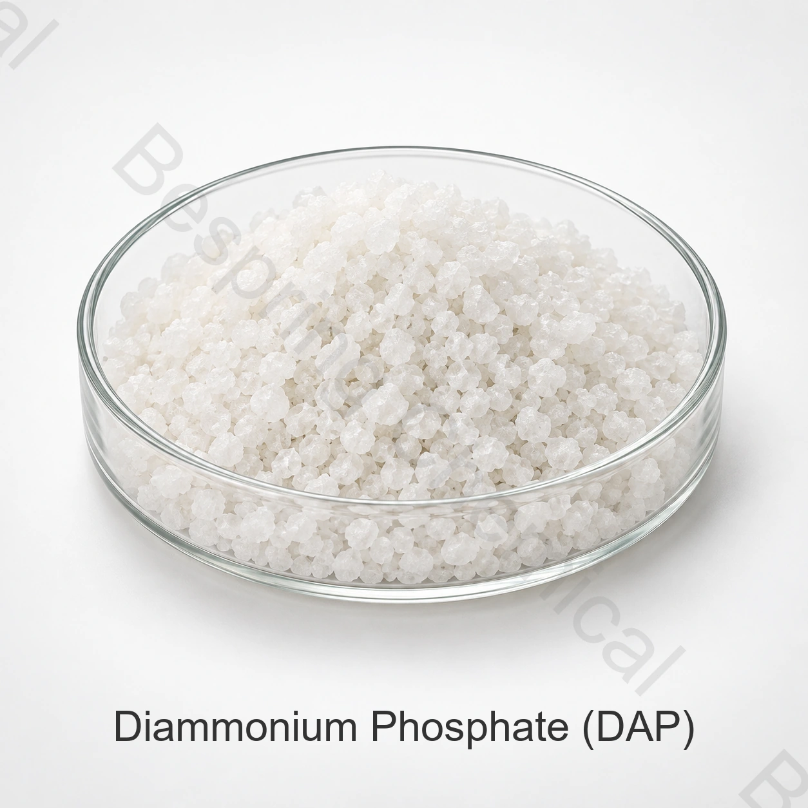

مكوّن بدرجة غذائية · INS 342(ii)
فوسفات ثنائي الأمونيوم الغذائي (DAP)
فوسفات ثنائي الأمونيوم الغذائي ملح فوسفاتي قابل للذوبان في الماء، ويُقيّم في التطبيقات المسموح بها كمغذٍ للخميرة ومنظم للحموضة ومكوّن في أنظمة التخمير الكيميائي.
- المنتج
- فوسفات ثنائي الأمونيوم الغذائي (DAP)
- رقم CAS
- CAS 7783-28-0
- التعريف
- INS 342(ii)
- الصيغة / المرجع
- (NH₄)₂HPO₄

صورة المنتج · أكد الدرجة والتعبئة عند الطلب
أرسل التطبيق والمواصفة والحدود الحرجة والكمية والعبوة وبلد الوجهة.
الدرجةدرجة غذائية، رهناً باعتماد المصدر
العبوةتأكيد نوع العبوة والوزن الصافي ومتطلبات التحميل
التوريدعرض السعر حسب الكمية والوجهة وشروط Incoterms
مستندات الدفعةمواصفة سارية وشهادة تحليل للدفعة
إجابة فنية مباشرة
هوية المنتج وكيفية تحديد المواصفة
فوسفات ثنائي الأمونيوم الغذائي ملح فوسفاتي قابل للذوبان في الماء، ويُقيّم في التطبيقات المسموح بها كمغذٍ للخميرة ومنظم للحموضة ومكوّن في أنظمة التخمير الكيميائي.
لا يكفي الاسم التجاري لاختيار مكوّن غذائي. اطلب مواصفة المصنع الحالية وطرق التحليل ونموذج شهادة تحليل وشهادة الدفعة، وقيّم المطابقة للتطبيق والمواصفة المتفق عليها وسوق بيع الغذاء.
الوظائف في الأغذية
الوظائف الرئيسية
تنظيم الحموضة والتأثير المنظّم
مكوّن في أنظمة الرفع المناسبة
تقييم التطبيقات
تطبيقات تتطلب التقييم
تخمير الأغذية والمشروبات
المخبوزات والخلطات الجافة
إنتاج الخميرة
التطبيقات إرشادية وليست تصريحاً عاماً أو توصية بجرعة. يجب التحقق من الملاءمة التقنية وحد الاستخدام والوسم في المنتج النهائي.
دليل اعتماد المورد
معايير الاختيار للمشتريات التجارية
محتوى DAP وP₂O₅ والنيتروجين
درجة الحموضة والرطوبة والمواد غير الذائبة
حدود الفلوريد والزرنيخ والرصاص وحجم الجسيمات
يجب عدم الخلط بين الدرجة الغذائية ودرجة الأسمدة؛ ويُثبت الاستخدام الغذائي بمواصفة المصنع وإمكانية التتبع ووثائق الدفعة.
المستندات والتوريد
الوثائق والتعبئة والخدمات اللوجستية
لاعتماد المورد، اطلب المواصفة الموقعة وTDS وSDS ونموذج COA والإقرارات التنظيمية والشهادات السارية. أكّد الوزن الصافي ومادة العبوة والبطانة والمنصات والوسم والصلاحية والتخزين والوجهة وشروط Incoterms.
مرجع فني مستقل
مرجع تقني مستقل
راجع المرجع الفني الرسمي المحدد لهذا المنتج للتحقق من الهوية والسياق التنظيمي. وتظل المواصفة التعاقدية والأنظمة السارية في سوق الوجهة هي المرجع الملزم.
أسئلة المشترين
الأسئلة الشائعة
ما البيانات المطلوبة للحصول على عرض سعر؟
اذكر التطبيق والمواصفة والحدود الحرجة والحجم السنوي وحجم الشحنة والتعبئة والوجهة وشروط Incoterms والشهادات والموعد المطلوب، حتى يمكن إعداد عروض قابلة للمقارنة فنياً.
كيف يتم تأكيد الدرجة الغذائية؟
تحقق من مواصفة المصنع المحدد ووثائق نظام الجودة والإقرارات ذات الصلة وشهادة تحليل الدفعة؛ فالاسم وحده لا يثبت الدرجة الغذائية.
هل يمكن استخدام المنتج في أي غذاء أو سوق؟
لا. يجب التحقق من فئة الغذاء والوظيفة وحد الاستخدام ومتطلبات الوسم وفق الأنظمة السارية في سوق الوجهة.
توريد قائم على المواصفات
اطلب عرض سعر لـ فوسفات ثنائي الأمونيوم الغذائي (DAP)
شارك التطبيق والمواصفة المستهدفة والحدود الحرجة والكمية والعبوة وبلد الوجهة والمستندات المطلوبة.
وثائق المنتج
طلب الوثائق
حدد الدرجة وسوق الوجهة حتى نتمكن من تأكيد الوثائق المتاحة لطلبك.
المرجع الخارجي ليس شهادة دفعة أو مواصفات منتج من Bespring.